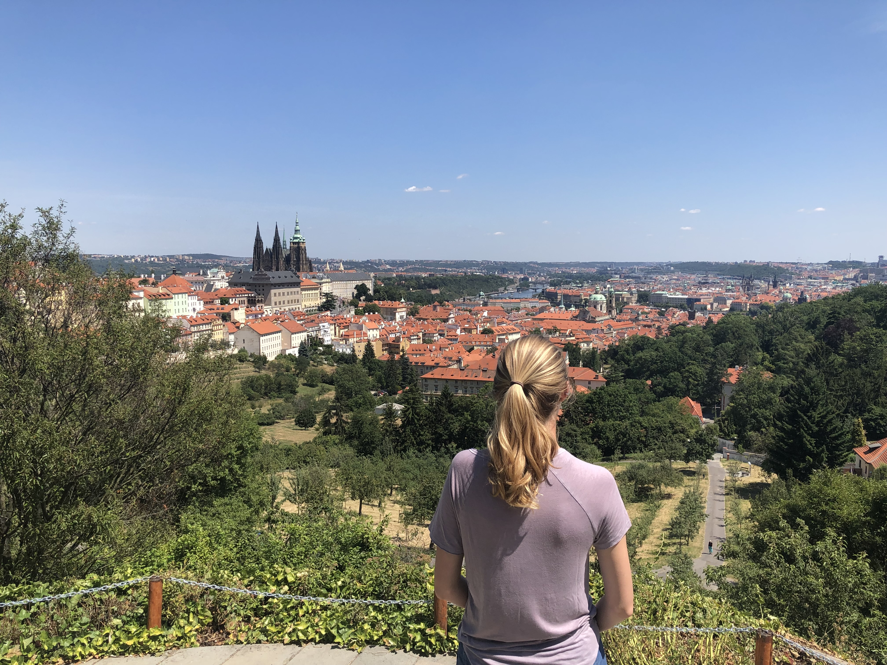

England
In London, we visit all sorts of touristy landmarks, like the Tower Bridge, the Tower of London, the Shard, the Globe, Big Ben, and so on. But the only picture I found was from when we explored this old ship near the Globe.
Scotland
The highlight of Scotland was definitely the Isle of Skye. Pictured here are an old tower ruin by the water and a "fairie glen" with a spiral on the ground.
Italy
Italy is beautiful - see me on the roof of a shopping mall in Venice and visiting Michelangelo's David in Florence.
Czech Republic

These photos were in Prague. I really liked seeing all the cool architecture and trying a trdlnik - a type of pastry baked around a stick so its hollow = helloooooo ice cream :)
Germany
Some highlights of Germany:
First picture: the Rathaus-Glockenspiel in the Marienplatz, Munich
Second picture: Hall of Antiquities in the Munich Residenz, the ancient city castle in Central Munich
Third Picture: Berlin wall
Belgium

Near Brussels, we visited an amusement park called Mini Europe, which made us feel like we were seeing a record number of famous landmarks in an hour/what it would feel like to visit Europe if we were 25x taller lol. And of course had to have some Belgian waffles
France

I LOVED the stained glass in Sainte Chappelle and if you want to see Paris from above, but don't like climbing hundreds of stairs in the Eiffel Tower, take this tethered hot air ballon!
Spain

Spain has some amazing architecture. Pictured: the Ronda Bridge and La Sagrada Familia